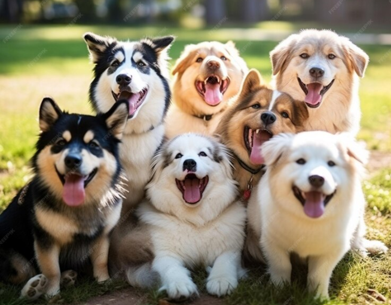

<body>

<div class="container">
  <div class="main-container">

    <div class="content-container">
      <div class="image-container">
        <h1>What Are the Cutest Dog & Puppy Breeds?</h1>
        
      </div>

      <p>Tall, pointy ears or long, droopy ears? Tiny, fluffy bodies or large, regal bodies? Many varying
        characteristics go into what makes certain dog breeds the best-looking dogs. All dogs are cute, but we took some
        of the most popular choices out there to develop this list of the 13 cutest dog breeds.

        Learn about their temperaments and care requirements to discover whether any of these beautiful dogs are right
        for you.</p>
      <div class="content-container" *ngIf="!isFullTextShown">
        <h2> 1. French Bulldog </h2>
        <p>Short-snouted and bat-eared, it’s no wonder the French Bulldog qualifies to many as a cute small dog breed. His
          comical expression matches his comedic personality; he loves playing and entertaining his family. For you
          snugglers out there, you’re in luck. The Frenchie also enjoys cuddling and snoozing with his favorite person.

          Good to know: The French Bulldog snores, may wheeze and drool, and his facial wrinkles should be regularly
          cleaned. His bouts in hot, humid weather should be limited.</p>
        <h2> 2. Beagle</h2>
        <p> One of America’s all-time favorite breeds, the Beagle is a friendly, intelligent pack dog that thrives on the
          company of other dogs and people. With his long, droopy ears and big brown eyes, he is gentle in nature,
          incredibly tolerant and is always ready to join in a game or an adventure.

          Good to know: The Beagle often barks and howls and yearns to explore the outdoors.</p>

        <h2>3. Pembroke Welsh Corgi</h2>
        <p> Short legs. Tall ears. Long body. Big smile. This string of descriptors undoubtedly portray the adorable
          Pembroke Welsh Corgi. Her love, loyalty and quick-wittedness certainly qualify her as one of the cutest dog
          breeds for many dog-lovers, both inside and out! Bonus: The Corgi is often good with children.

          Good to know: Many Corgis bark a lot and need daily physical and mental exercise. Their thick coats require
          brushing weekly.</p>

        <h2>4. Golden Retriever</h2>
        <p>One of the most popular breeds in the U.S., the Golden Retriever is a large, sweet-faced, kind-eyed dog. As you
          can tell from her picture, it is no wonder she frequently makes the cut for cute puppy breeds lists, too. She is
          intelligent, patient and loves people. Her favorite activities include learning and games that involve
          retrieving and carrying items in her mouth.

          Good to know: The Golden requires daily physical and mental exercise and human interaction.</p>

        <button mat-button class="show-button" (click)="toggleTextDisplay()">Show More</button>
      </div>

      <div class="content-container" *ngIf="isFullTextShown">
        <h2> 1. French Bulldog </h2>
        <p>Short-snouted and bat-eared, it’s no wonder the French Bulldog qualifies to many as a cute small dog breed. His
          comical expression matches his comedic personality; he loves playing and entertaining his family. For you
          snugglers out there, you’re in luck. The Frenchie also enjoys cuddling and snoozing with his favorite person.

          Good to know: The French Bulldog snores, may wheeze and drool, and his facial wrinkles should be regularly
          cleaned. His bouts in hot, humid weather should be limited.</p>
        <h2> 2. Beagle</h2>
        <p> One of America’s all-time favorite breeds, the Beagle is a friendly, intelligent pack dog that thrives on the
          company of other dogs and people. With his long, droopy ears and big brown eyes, he is gentle in nature,
          incredibly tolerant and is always ready to join in a game or an adventure.

          Good to know: The Beagle often barks and howls and yearns to explore the outdoors.</p>

        <h2>3. Pembroke Welsh Corgi</h2>
        <p> Short legs. Tall ears. Long body. Big smile. This string of descriptors undoubtedly portray the adorable
          Pembroke Welsh Corgi. Her love, loyalty and quick-wittedness certainly qualify her as one of the cutest dog
          breeds for many dog-lovers, both inside and out! Bonus: The Corgi is often good with children.

          Good to know: Many Corgis bark a lot and need daily physical and mental exercise. Their thick coats require
          brushing weekly.</p>

        <h2>4. Golden Retriever</h2>
        <p>One of the most popular breeds in the U.S., the Golden Retriever is a large, sweet-faced, kind-eyed dog. As you
          can tell from her picture, it is no wonder she frequently makes the cut for cute puppy breeds lists, too. She is
          intelligent, patient and loves people. Her favorite activities include learning and games that involve
          retrieving and carrying items in her mouth.

          Good to know: The Golden requires daily physical and mental exercise and human interaction.</p>
        <h2> 5. Dachshund</h2>
        <p> This cute dog breed comes in a variety of sizes and colors, but one physical feature remains constant: his
          elongated body. Affectionately nicknamed “wiener dog,” the Dachshund is fearless, curious and lively, with a
          superior sense of smell. He is exceptionally playful and gets along well with children, making him an ideal
          family pet.

          Good to know: Dachshunds tend to bark, but good ways to burn off some of their energy are daily walks and games
          in the yard.</p>

        <h2> 6. Bernese Mountain Dog</h2>
        <p> Clearly one of the many beautiful dog breeds, the large, tri-colored Bernese Mountain Dog has a long, thick
          double coat that protects her in cold conditions. She is calm, confident and extremely devoted. She loves the
          outdoors, especially cold weather, so she’d appreciate a good hike or walk on a leash each day.

          Good to know: The luxurious coat of the Bernese Mountain Dog requires frequent brushing.</p>

        <h2> 7. Yorkshire Terrier </h2>
        <p> Named for the Yorkshire area of England where they originated, Yorkshire Terriers have become one of the most
          popular breeds in the U.S – and are considered one of the cutest small dog breeds. This toy-sized beauty has a
          long, luxurious coat. She is brave, determined, energetic and investigative, ever eager for adventure.

          Good to know: Yorkies thrive on games and interaction with family. Their long coats need brushing every day or
          two.</p>

        <h2> 8. Cavalier King Charles Spaniel</h2>
        <p> A namesake of King Charles II, this beautiful dog is best recognized by her long, curly ears and puppy-dog
          eyes. The Cavalier King Charles Spaniel is an enthusiastic, eager-to-please and affectionate cute small dog
          breed that flourishes on companionship. She is sweet, gentle and playful.

          Good to know: Cavalier King Charles Spaniels love to explore, sniff and chase. Their long coats need daily
          brushing and regular grooming.</p>

        <h2> 9. Pug
        </h2>
        <p>The darling short-nosed Pug with wideset eyes is popularly deemed one of the best-looking dogs. His comical,
          playful and mischievous tendencies are sure to bring adventure to your household! He may like to show off, but
          he balances his quirky personality with his loving disposition.

          Good to know: Pugs wheeze and snore, and their time outdoors in heat and humidity should be limited. Their
          facial wrinkles need to be cleaned regularly to prevent skin infections.</p>

        <h2> 10. Pomeranian </h2>
        <p> Her miniature body, ultimate fluff and sweet, smiley face easily contribute to the Pomeranian’s identity as
          one of the cutest dog breeds. She is an animated extrovert with great intelligence and a vivacious spirit. Her
          protective demeanor makes her a natural watchdog, barking to alert the family to visitors.

          Good to know: Some Pomeranians bark a lot, and their double coats need regular brushing.</p>

        <h2> 11. Bichon Frise</h2>
        <p>This small, white powder puff is understandably deemed by many as one of the cutest dog breeds, considering the
          noted Spanish painter Francisco de Goya depicted the Bichon Frise in a number of his works! Known for his merry
          temperament, gentle manner, sensitivity and affection, the Bichon makes an excellent family companion.

          Good to know: The Bichon barks a lot, loves activity and needs daily exercise. His coat doesn’t shed, but it
          needs brushing every other day to prevent mats.</p>

        <h2> 12. Siberian Husky</h2>
        <p>Stunningly blue-eyed, the Siberian Husky is commonly included in lists of cute puppy breeds. Fun-loving,
          adventurous and clever, she is known for her athletic endurance. When fully grown, she retains a regal beauty.

          Good to know: Huskies require ample daily exercise, like a long jog. They are very social and need human or
          canine companionship.</p>

        <h2> 13. American Eskimo</h2>
        <p>This white, beautiful dog with flowing fur might blend into the snow if you don’t look closely enough! The
          American Eskimo Dog is highly intelligent, bright and lively. She loves to run, especially in cold weather, and
          is incredibly agile. A vigorous game in the yard or a brisk walk will satisfy the Eskie’s need for a good
          workout every day.

          Good to know: The Eskie’s double coat needs regular brushing, especially when she’s shedding.</p>
        <button mat-button class="show-button"  (click)="toggleTextDisplay()">Show Less</button>
      </div>


    </div>

    <div class="side-container">

      <!--    start quizz-->
      <div class="quiz">
        
        <h2 style="text-align: center; margin-bottom: 0; margin-top: 15px"> Find your best </h2>
        <h2 style="text-align: center; margin-bottom: 10px"> match </h2>
        <p class="text-quiz"> It only takes 60 seconds. </p>

        <button (click)="goToQuizPage()" class="start-quiz-btn" mat-button>GET STARTED</button>
      </div>
    </div>
  </div>
</div>
</body>
